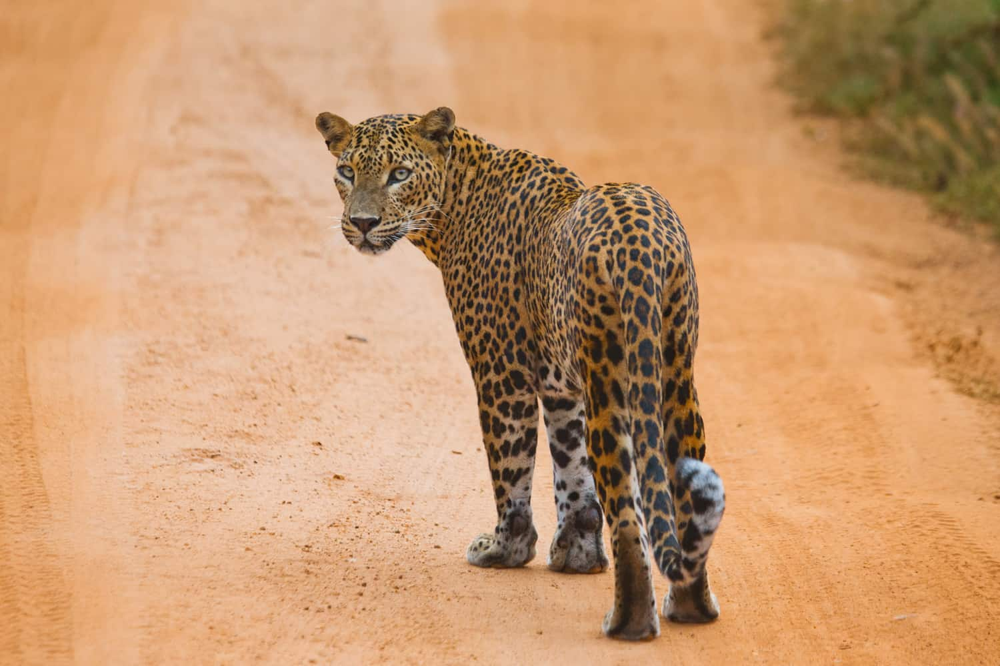
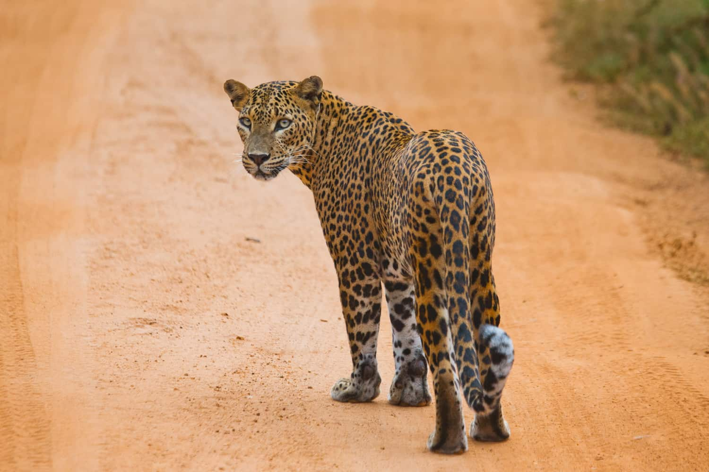

Sri Lankan leopard
leopard Venues in Sri Lanka
Horton Plains National Park
The park lies approximately 20 Km south of Nuwara Eliya. Horton Plains, the surrounding forests and the adjoining Peak Wilderness constitute Sri Lanka’s most important catchment area, of almost all major rivers. Spotting a leopard at Horton Plains was nigh impossible before 2021, but the process of habituation has since begun, and spotting leopards has since become an increasingly common phenomenon.
Kumana National Park
Located in the southeast corner of Sri Lanka, the 18,149 hectares Kumana National Park is a well-known eco-tourism attraction and bird sanctuary Kumana National Park has been an incredible stronghold for Sri Lankan Leopards (Panthera pardus kotiya). The park is adjoining Kudumbigala Sanctuary and Yala Block 2, providing further habitats for leopards to extend their behavioral landscape
Udawalawe National Parl
Udawalawe National Park is a national park on the boundary of Sabaragamuwa and Uva Provinces in Sri Lanka,Udawalawe is an important habitat for Sri Lankan elephants, which are relatively hard to see in its open habitats. Visitors to Udawalawe National Park may have the opportunity to see leopards, but sightings are generally less frequent compared to other parks known for their leopard populations.
 

Threats to Sri Lankan Leopards
Habitat Loss
Habitat loss is a significant threat to the survival of leopards in various regions, including Sri Lanka Habitat loss often results in a decline in the prey species that leopards depend on for sustenance.As leopards lose their natural habitats, they may venture into human-dominated landscapes in search of food. Habitat fragmentation can isolate leopard populations, leading to reduced genetic diversity
- Reforestation
- Sustainable Land-Use Practices
- maintaining protected areas
Reducing the Threat:
Learn more about leopard conservation
Poaching
Poaching is the illegal hunting, capturing, or killing of wildlife, including leopards, for various purposes. Poaching contributes significantly to the decline of leopard populations. The removal of leopards through poaching can lead to an overpopulation of certain prey species. Poaching can result in the loss of specific individuals within a population, leading to reduced genetic diversity
- Anti-Poaching Patrols and Enforcement
- Community Involvement and Education
- Enforcing strict wildlife protection laws
Reducing the Threat:
Learn more about leopard conservation
Facts you should know
- Leopards are fast felines and can run at up to 58km/h!
- Leopards are very solitary and spend most of their time alone. They each have their own territory
- Leopards are skilled climbers, and like to rest in the branches of trees during the day
- Nocturnal animals, leopards are active at night when they venture out in search for food